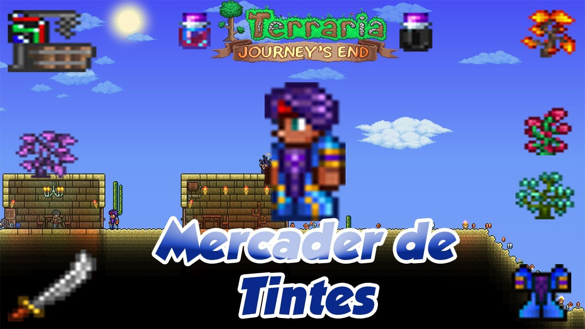

El Mercader de tintes es un NPC cuya función es venderte algunos tintes, además de una máquina para hacer tintes con objetos que puedes encontrar.
Para obtenerlo debes poseer una planta extraña o un material para tintes y derrotar a un jefe del modo normal.
Puede darte misiones en las que tendrás que entregar unas Plantas extrañas a cambio de unos tintes especiales exclusivos de las misiones.
El mercader de tintes |
|
 |
|
Estadisticas |
|
Tipo |
NPC |
Salud |
250 |
Arma |
cimitarra exotica |
Defensa |
15 |
Especialidad |
Vende tintes |
Bestiario |
|
Descripcion |
Excéntrico y bastante presuntuoso, el Mercader de tintes tiene gustos caros. Es apasionado con los materiales usados en los tintes que vende. |
Bioma preferido |
El desierto |
Deja |
|
cimitarra exotica |
12.5% |
IDs internas |
|
ID de bestiario |
207 |
ID de NPC |
8 |
Cuando le das Plantas extrañas:
Cuando NO tienes Plantas extrañas:
Cuando hay fiesta:
| Objeto | Precio | Disponibilidad |
|---|---|---|
| Tinte plateado | 1 |
Siempre disponible |
| Tinte marrón | 1 |
Siempre disponible |
| Tubo para tinte | 5 |
Siempre disponible |
| Tinte de equipo | 1 |
Estar en Multijugador |
| Vestido del comerciante de tintes | 3 |
Durante Halloween |
| Turbante del comerciante de tintes | 3 |
Durante Halloween |
| Tinte sombrío | 3 |
Luna llena |
| Tinte negativo | 3 |
Luna llena |
Objetos que te da si le consigues Plantas extrañas , no se pueden comprar.
| Objeto | Disponibilidad |
|---|---|
| Tinte ácido | Siempre disponible |
| Tinte ácido rojo | Siempre disponible |
| Tinte ácido azul | Siempre disponible |
| Tinte de champiñon brillante | Siempre disponible |
| Tinte de pringue morado | Siempre disponible |
| Tinte reflectante | Siempre disponible |
| Tinte de oro reflectante | Siempre disponible |
| Tinte de plata reflectante | Siempre disponible |
| Tinte de obsidiana reflectante | Siempre disponible |
| Tinte de cobre reflectante | Siempre disponible |
| Tinte de metal reflectante | Siempre disponible |
| Tinte negativo | Siempre disponible |
| Tinte sombrío | Siempre disponible |
| Tinte espejismo | Siempre disponible |
| Tinte de crepúsculo | Modo difícil |
| Tinte de Hades | Modo difícil |
| Tinte de Hades en llamas | Modo difícil |
| Tinte de Hades en llamas oscuras | Modo difícil |
| Tinte lúgubre | Modo difícil |
| Tinte de fase | Modo difícil |
| Tinte de arena cambiante | Modo difícil |
| Tinte de gel | Modo difícil |
| Tinte de clorofita | Después de derrotar a un Jefe mecánico |
| Tinte flamígero viviente | Después de derrotar a un Jefe mecánico |
| Tinte arcoíris viviente | Después de derrotar a un Jefe mecánico |
| Tinte océano viviente | Después de derrotar a un Jefe mecánico |
| Tinte de voluta | Después de derrotar a Plantera |
| Tinte de duendecillo | Después de derrotar a Plantera |
| Tinte de voluta unicornio | Después de derrotar a Plantera |
| Tinte de voluta infernal | Después de derrotar a Plantera |
| Tinte marciano | Después de derrotar a la Locura marciana |
| Tinte arcoíris de media noche | Después de derrotar a la Locura marciana |
| Sangre de Skiphs | Después de derrotar al Señor de la Luna |